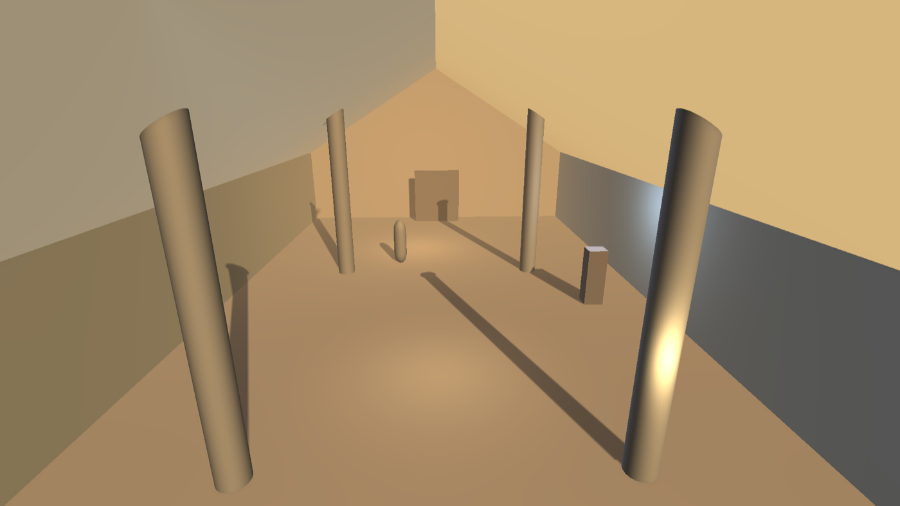
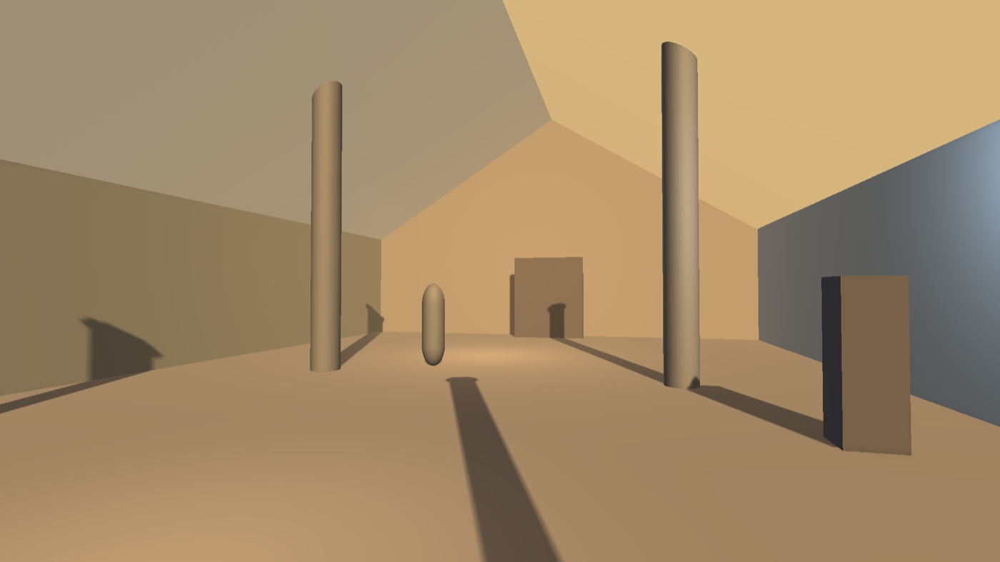
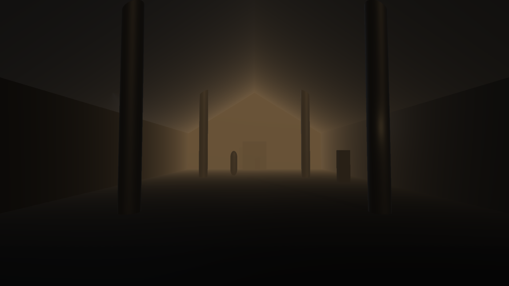

Afterhumans — Ботаника с закатным светом (этап G-04)
Тот же серый макет 28×14м, но теперь со светом: закатное солнце сквозь свод, тёплая палитра, тени, post-FX (ACES/Bloom)
Это тот же неф, что был серым боксом — но со светом. Геометрия не менялась, добавлен только закатный свет (солнце 3200K сквозь стеклянный свод), тёплые акценты по зонам, объёмная дымка и кинопостобработка. Текстур, растений и мебели ещё нет — это следующий, арт-этап. Свет — самый большой визуальный скачок к AAA.

HERO — вид вдоль всего нефа сверху. 4 колонны с тенями на полу · двускатный свод над головой · закатное солнце бьёт сквозь боковые стёкла · в торце серверный бокс и человек-эталон 1.8м.

Середина нефа — между колоннами, тёплый/холодный контраст, мягкие тени.

POV игрока от входа — атмосферно-тёмный вход, тёплое свечение манит вглубь (солнце с другой стороны).